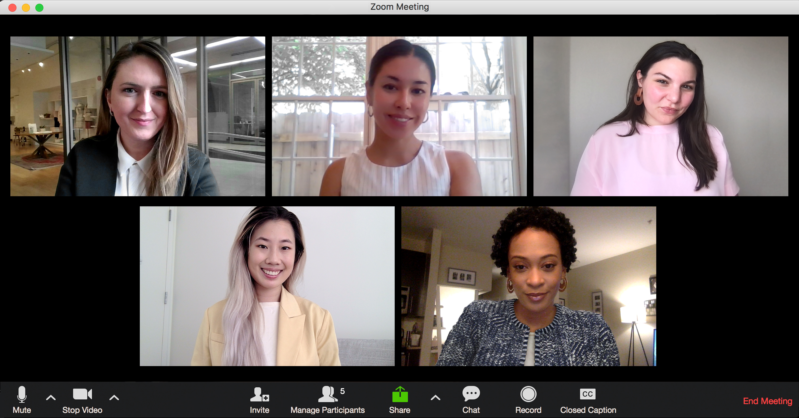
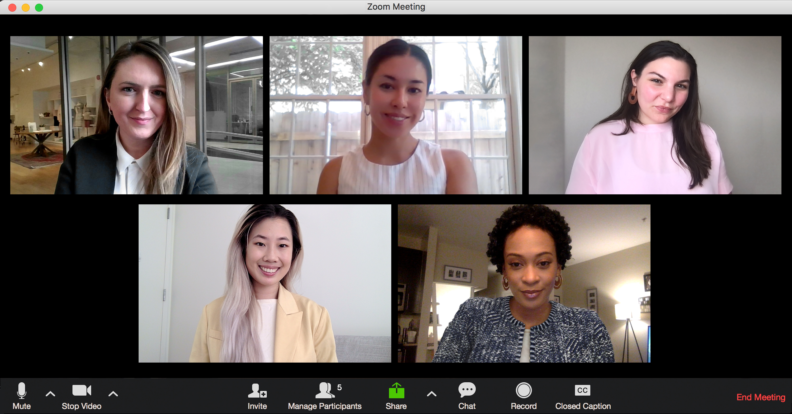

To transform the hiring process by establishing a smooth link between opportunity and talent, promoting a society in which each person has a rewarding career and each firm prospers when the appropriate people are hired
At Job nest, our mission is to connect exceptional talent with leading organizations, fostering meaningful partnerships that drive success for both candidates and clients. We are committed to providing personalized recruitment solutions that prioritize diversity, integrity, and innovation. By leveraging cutting-edge technology and industry expertise, we strive to create a seamless hiring experience, ensuring that every candidate finds the right fit and every employer builds a strong, dynamic team..
When Job Nest was founded in 2024, its mission was to transform the hiring process by tackling the issues that both companies and job searchers faced. As a tiny staff at first, we soon established a reputation for our attentiveness to detail and dedication to comprehending the particular requirements of both candidates and clients. We improved the hiring process and extended our services to a variety of industries by using cutting-edge technologies and creative approaches. Our development has been largely attributed to our focus on diversity and inclusion since we think that different viewpoints provide better results. As a market leader in the recruitment space today, Job Nest has remained committed to matching people with opportunities while adapting constantly to suit the demands of a changing labor market..
 
